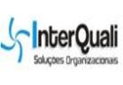

EMPRESAS CADASTRADAS
Global Village Telecom (sigla: GVT) era uma operadora de telecomunicações brasileira. Surgiu em 2000 como resultado de um consórcio formado pela holandesa Global Village Telecom (78%) e as norte-americanas ComTech Communications Technologies (20%) e RSL (2%). Em 30 de setembro de 1999, obteve licença junto à Agência Nacional de Telecomunicações (Anatel). Amos Genish é um executivo israelense que veio para o Brasil criar a GVT com o apoio de fundos de investimentos internacionais, e que em 2009 vendeu a GVT para a francesa Vivendi.
Somos uma empresa que atua no seguimento de sulementação alimentar e se destaca na qualidade de seus produtos e no bom atendimento ao cliente. Alem de ter os preços mais competitivos no mercado nacional.
A InterQuali nasceu em 2010 para concretizar o sonho de duas amigas e colegas de trabalho: Abrir seu próprio negócio. O desejo de empreender, a experiência adquirida ao longo do tempo, bem como as oportunidades de negócio, levaram as atuais sócias Alyne Barros e Aryana Martins a darem um novo e importante passo em suas trajetórias profissionais.
A Universidade Paulista, UNIP, reconhecida pela Portaria nº 550/88, iniciou suas atividades em 9 de novembro de 1988. Foi constituída a partir do Instituto Unificado Paulista, IUP, do Instituto de Ensino de Engenharia Paulista, IEEP, e do Instituto de Odontologia Paulista, IOP; o primeiro destes, autorizado a funcionar em 1972, inicialmente com os cursos de Comunicação Social, Letras, Pedagogia e Psicologia.